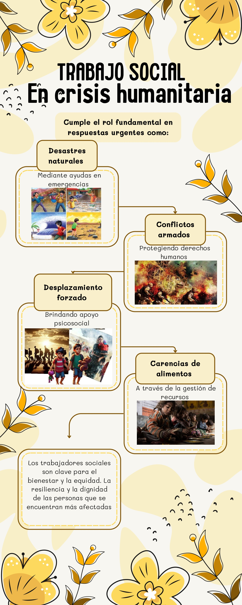

Causas Principales
Las principales causas del cambio climático incluyen la quema de carbón, petróleo y gas, la deforestación y la agricultura intensiva. Estas actividades liberan gases de efecto invernadero como el dióxido de carbono (CO₂) y el metano (CH₄), que atrapan el calor en la atmósfera.
Consecuencias Globales
Las consecuencias del cambio climático son numerosas: aumento del nivel del mar, olas de calor más intensas, tormentas más fuertes, pérdida de biodiversidad, sequías prolongadas, derretimiento de glaciares y alteraciones en los ecosistemas.
Impacto en la Salud y Sociedad
El cambio climático también afecta la salud humana: propaga enfermedades, empeora la calidad del aire y provoca inseguridad alimentaria y del agua. Además, agrava las desigualdades sociales, forzando migraciones y generando conflictos por recursos escasos.
Soluciones y Alternativas
Podemos mitigar el cambio climático mediante el uso de energías renovables, la eficiencia energética, la movilidad sostenible, la protección de bosques y el cambio en nuestros hábitos de consumo. La educación y la acción colectiva son esenciales para lograr un futuro más sostenible.
INFOGRAFÍA VISUAL
